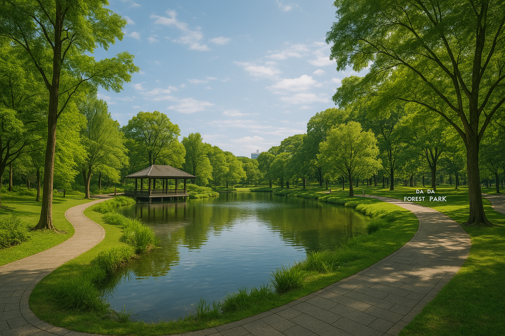

地點與詳細資訊
- 電話: 86-91-555-888
- Email: welcom@xhotel-taichung.com
- 地址: 西屯區臺灣大道四段 40360 12樓
- Check-in: 2:00 下午
- Check-out: 11:00 上午
- Min-check-in-age: 18 歲
交通方式
自行開車
國道1號下中港交流道（梅花-A號），可到飯店，備有停車場（住宿旅客免費停車）。
高鐵接駁
在6號出口轉乘 161號，約15分鐘後，達西屯區臺灣大道四段（站名），步行2分鐘。
搭乘計程車 (TAXI)
從高鐵站搭乘計程車（上午6點到下午4點），每人每位 NTD 30。
公車資訊
搭乘市區公車請於XX站下車，從中港路走，約5分鐘到達飯店。可搭乘 33, 45, 125, 69。
附近景點 大大森林公園
距離 X Hotel 僅一箭之遙，大大森林公園是都市中的一片綠洲。佔地67.34公頃，以其茂密的樹林和寧靜的氛圍而聞名。無論您是尋求寧靜的時刻還是清爽的慢跑，這片寧靜的綠洲都會是您城市探險的完美起點。
